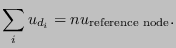

Next: Mathematical description of a Up: Boundary conditions Previous: Multiple point constraints (MPC) Contents
In this section the theoretical background of the keyword *COUPLING followed by *KINEMATIC or *DISTRIBUTING is covered, and not the keyword DISTRIBUTING COUPLING.
Coupling constraints generally lead to nonlinear equations. In linear calculations (without the parameter NLGEOM on the *STEP card) these equations are linearized once and solved. In nonlinear calculations, iterations are performed in each of which the equations are linearized at the momentary solution point until convergence.
Coupling constraints apply to all nodes of a surface given by the user. In a kinematic coupling constraint by the user specified degrees of freedom in these nodes follow the rigid body motion about a reference point (also given by the user). In CalculiX the rigid body equations elaborated in section 3.5 of [19] are implemented. Since CalculiX does not have internal rotational degrees of freedom, the translational degrees of freedom of an extra node (rotational node) are used for that purpose, cf. *RIGID BODY. Therefore, in the case of kinematic coupling the following equations are set up:
This applies if no ORIENTATION was used on the *COUPLING card, i.e. the specified degrees of freedom apply to the global coordinate system. If an ORIENTATION parameter is used, the degrees of freedom apply in a local system. Then, the nodes belonging to the surface at stake (let us give them the numbers 1,2,3...) are duplicated (let us call these d1,d2,d3.....) and the following equations are set up:
For distributing coupling the area weighted mean translations (all three of them) and the rotations specified by the user are connected to the corresponding translations/rotations of a reference node. In order to take the weighting into account, all nodes belonging to the surface (let us give them the numbers 1,2,3...) are duplicated (let us call these d1,d2,d3....). Now, the following equations are generated:
 |
(167) |
|  | (168) |
If an ORIENTATION is applied to a distributing coupling definition the mean rotation equations are reformulated for the local rotation axis.